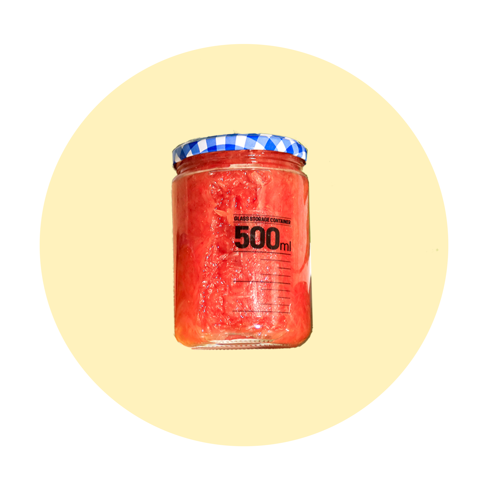
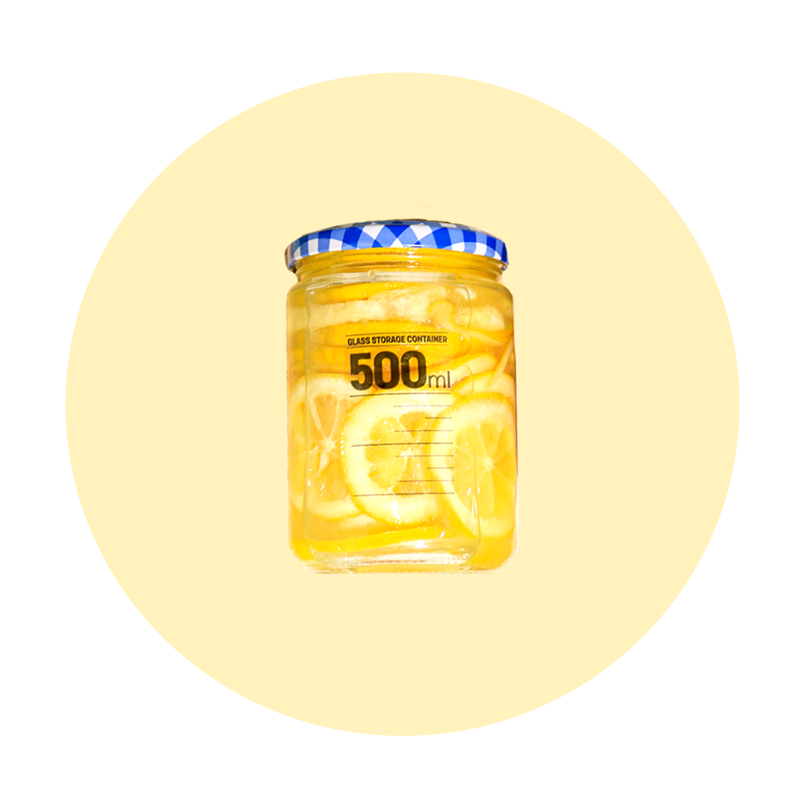
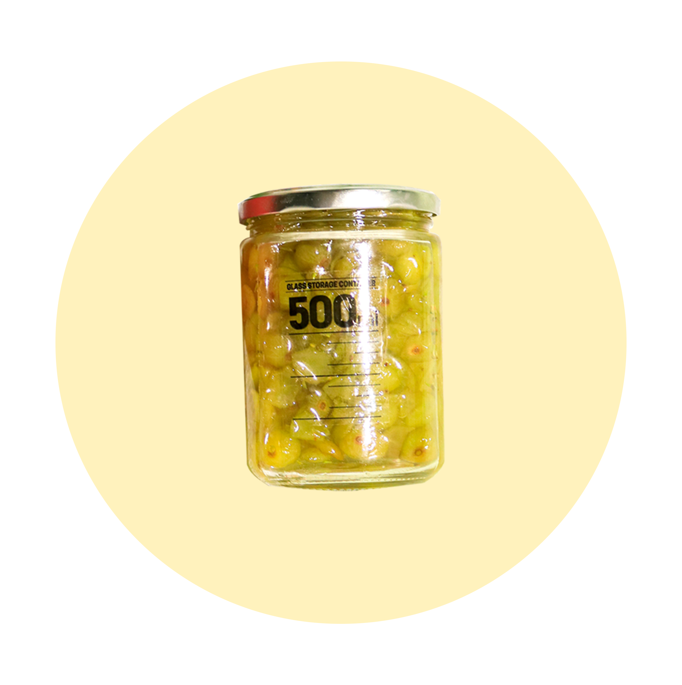
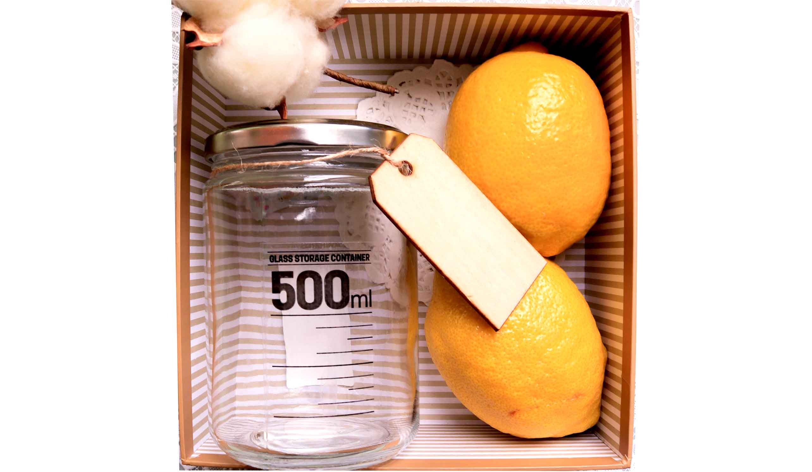
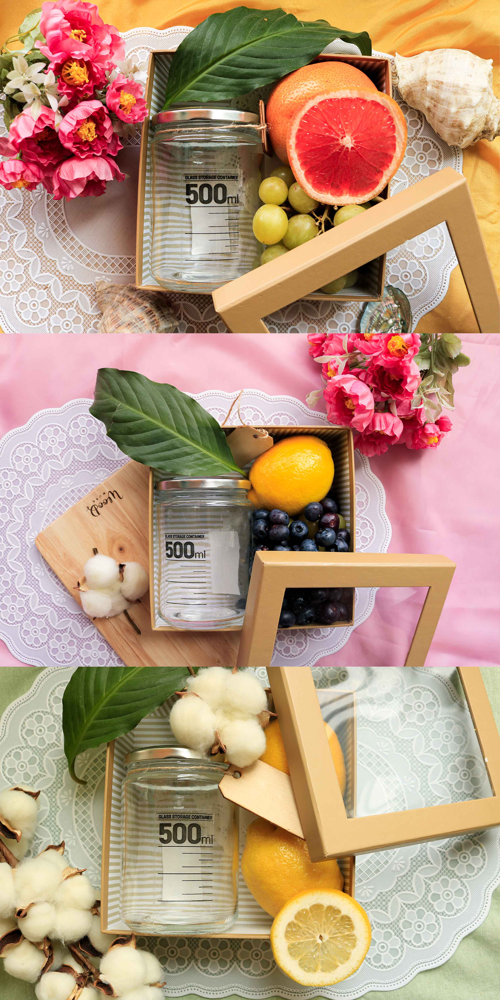
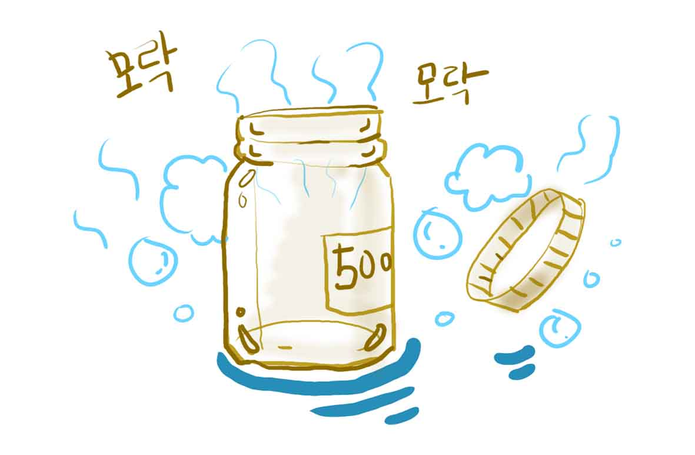
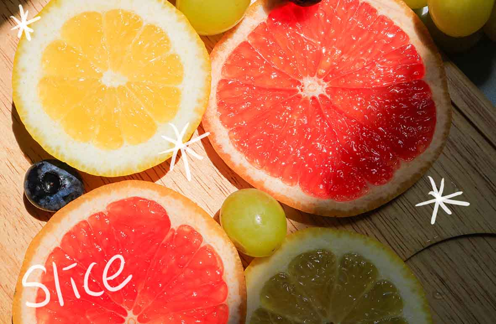

수제 과일청 만들기에 관심 있지만 막상 준비하려니 귀찮고 어떤 과일로 해야할지 고민되는 분들을 위해 준비한 “수제 과일청 만들기 키트”입니다.내가 아닌 가족,친구,연인,지인에게 직접만든 과일청을 선물할 수 있게 필요한 포장용기를 함께 드리고 있어 사랑과 감사를 표현하고 싶은 분들에게 행복한 경험을 안겨드릴 수 있게 하였습니다
"달콤 쌉쌀하게"
자몽이 톡톡 씹히는 건강한 자몽청
"상큼 달달하게"
레몬이 가득 들어간 상큼한 레몬청
"달달하게 톡톡"
몽실몽실 청포도알이 입안에 가득 청포도청
달콤청과에서 만든 수제 과일청 키트는 쉽고 간편하게 만드는 패키징입니다. 만들어 집에서 나만의 음료를 만들수도 감사한 마음을 선물하는 용도로도 좋습니다.


 1.열탕 소독은 밀폐 용기를 깨끗이 씻은 뒤 끓는 물에 병을 넣어 소독해 주세요
 2.베이킹 소다와 굵은 소금으로 닦아 물기를 제거한 후 얇게 썰어 준비해 주세요
따뜻한 물
따뜻한 물과 함께 향긋한 과일차로
탄산수
청량한 탄산수와 함께 에이드로
얼음물
얼음물과 함께 차가운 음료로
드레싱
샐러드와 함께 달달하게
요거트
꾸덕한 요거트와 달달한 디저트로
아이스크림
아이스크림 위에 좀 더 달콤하게